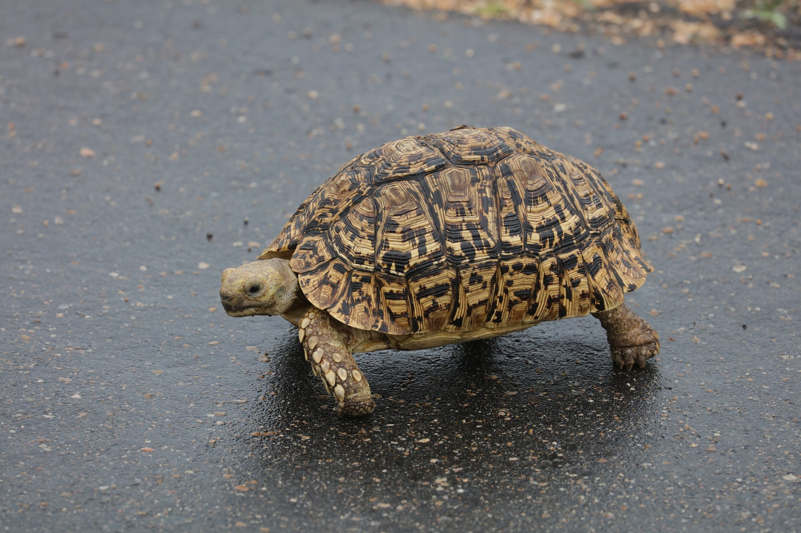

(백엔드 애들이 받아올 사용자 아이디)님 로그아웃

· 이름 : 레오파드 육지거북(Leopard Tortoise)
· 수명 : 50년에서 80년
· 크기 : 최대 약 76cm
· 먹이 : 초식성
· 서식지 : 동부에서 남부 아프리카의 건초지대
· 부연 설명 : 땅거북중에서 4번째로 크게 자라는 거북이다. 등갑이 다른 땅거북에 비해서 높게
자라는 특징이 있다. 때문에 뒤집혀도 오뚜기처럼 빨리 정상으로 돌아온다. 주로 낮에 활동한다.
번식이 쉽고, 다산하기 때문에 원산지에서의 수출이 필요없을 정도가 되었으며, IUCN적색 목록
에서도 최소단계인 LC로 분류되고 있다.
· 수명 : 50년에서 80년
· 크기 : 최대 약 76cm
· 먹이 : 초식성
· 서식지 : 동부에서 남부 아프리카의 건초지대
· 부연 설명 : 땅거북중에서 4번째로 크게 자라는 거북이다. 등갑이 다른 땅거북에 비해서 높게
자라는 특징이 있다. 때문에 뒤집혀도 오뚜기처럼 빨리 정상으로 돌아온다. 주로 낮에 활동한다.
번식이 쉽고, 다산하기 때문에 원산지에서의 수출이 필요없을 정도가 되었으며, IUCN적색 목록
에서도 최소단계인 LC로 분류되고 있다.